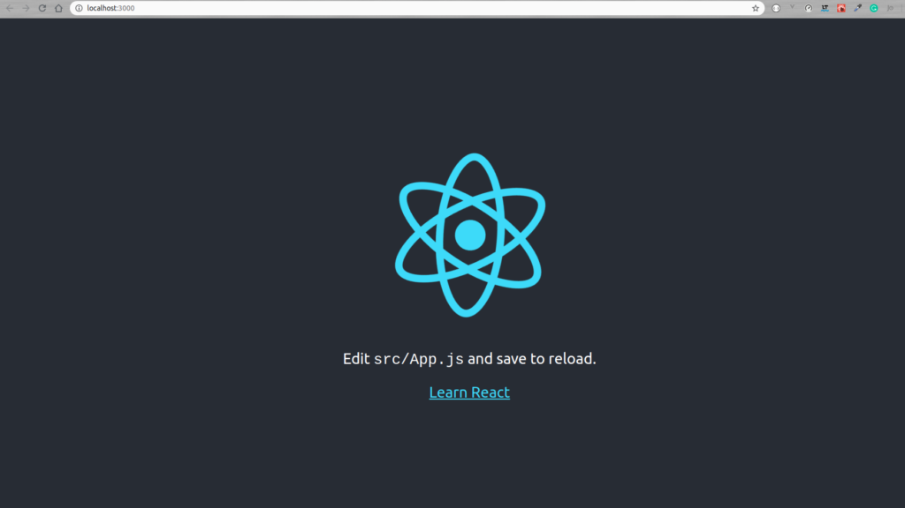

Hoy vamos a ver como instalar React, una de las librerías o frameworks para JavaScript más populares.
Para hacer la instalación de ReactJS vamos a seguir estos sencillos pasos:
Paso 1. Instalar NodeJS en su ultima versión, para eso entraremos a su web oficial y descargaremos el instalador más actualizado https://nodejs.org/es/
Paso 2. Actualizar NPM, el gestor de paquetes de node, para bajarnos las dependencias más actuales:
npm install -g npm@latest
Paso 3. Borrar la cache de NPM:
npm cache clean --force
Paso 4. Instalar Create React App, que es un interprete de consola(CLI) que nos va a permitir instalar React facilmente e incluirá webpack para la compilación y minificación del proyecto, un live reload, una estructura básica para los proyectos de ReactJS, etc, veamos como instalar este paquete:
npm install -g create-react-app
Ahora ya tenemos instalado «create react app» y ya podemos generar un nuevo proyecto de React.js
Para generar un nuevo proyecto de React.js y finalmente instalarlo, entraremos al directorio donde queramos generar el proyecto de reactjs y ejecutamos este comando:
create-react-app NombreDeMiProyecto
Ahora entraremos al directorio de nuestro proyecto y lanzaremos el servidor local de pruebas para React:
cd NombreDeMiProyecto npm start
Puedes comprobar la versión de React que tienes dentro del fichero package.json.
Ahora tendremos disponible la webapp de React 16 en http://localhost:3000/ y veremos nuestro proyecto corriendo, con la página de bienvenida por defecto.
Con esto ya sabemos como instalar React desde cero y como generar un proyecto base.
